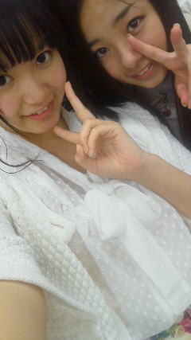

| 2012/05 13 Sun | ひめたん(* ゝω・*)ノ その151 |
個別握手会in東京
(ω)
では恒例の私服くいず
1.何で結局いっつも
ぴんく
着ないのって?今日のためにとっておいたからよ。
2.いやいや。今回は
しろ
で攻めてみたよ。※「しろ」って白色で書いたのよ。
どっちでしょう(^^)
ひめきゅん
のみなさんならわかるよね。
ひめたんの趣味とか好きなものとか知ってるでしょ。
ということで
「1ーっ!」
「2ーっ!」
って叫んだ方から正解を見てくださいこちらっ

はーい始まりました
2ndシングル「おいでシャンプー」発売記念個別握手かーい
＼(^O^)／☆
今回はたーくさんの方と握手して、お話して、終始濃ゆい握手会!
2ndの個人PVの感想とか、おいシャンや狼の話とか、新鮮だったかな。
あとままの日うぃる。
何するか決まってないよーどうしようって方がいっぱいおった気がする。
ひめたんと一緒ね(*^^*)
いや、「何するの?」って聞いてくださった方には一応ふわっと説明したけどね
んでもいろいろ迷っとる。明日なのに明日なーのーにー
あ乃木ここの感想もありがとうございます!
よかったよーっていっぱい言ってもらえて安心した(^^)
「何で司会者は変顔しないの?」って言われたけど、
司会者は変顔なんかせんよ!わら
第２回以降は司会でなく普通にタレコミしたりされたりする人になるから
そっちもぜひチェックしてみーてね☆
ひめたんは何回目にタレコまれるんかね。何言われるんかね。
うんお楽しみにー!
また見てみてアドバイスとか浮かんだらぜひ教えてぬ。

今日の
楽屋裏エピソード
。
そう
みさみさ
(衛藤美彩chan)との「みさぴょんひめにょんごっこ」
あれは事実だよ

みゅみゅ
と
かわごさん
(川後陽菜chan)には冷たーい目で見られて
かずみさん
(高山一実chan)は「いやーかわいいー
 」て。
」て。
」て。
いやあ。みさぴょんの可愛さは異常だよ。
いつかみさぴょんが公の場に現れんかな(`・ω・')にゃ
 ひめたんの好きな花って何?
ひめたんの好きな花って何?
やっぱりさくら(*^^*)
 ひめたんが好きなコンビニってどこですか?
ひめたんが好きなコンビニってどこですか?
ナチュラルローソン(ω)
広島にはないんよねー!
おしゃんてぃじゃん雰囲気とか商品とか♪
ひめたんは味噌汁の具は何が好きカナ?
じゃがいも(^^)
まいるどで可愛い味になるよー。
ひめかわさんなめこの味噌汁好き?
なめこの味噌汁も好きよ。
でも最近なめこが可愛くて食べれーん('・ω・`)
牛乳は好きですか?毎日飲んでますか?
この2週間くらい前から飲むようになった!
ヨーグルトも。寝る前の乳製品週間いいよー♪
ひめたんは激辛好きー?(=^エ^=)
前は辛いのめっちゃ好きだったけど
最近は食べよったら涙腺が刺激されて泣きそうになる('・ω・`)れれれ
 ひめぽんはタピオカ好き?(・ω・)
ひめぽんはタピオカ好き?(・ω・)
好きよー!
(*´・ω・*)ひめたん
コメント(109)
2012/05/13 00:18